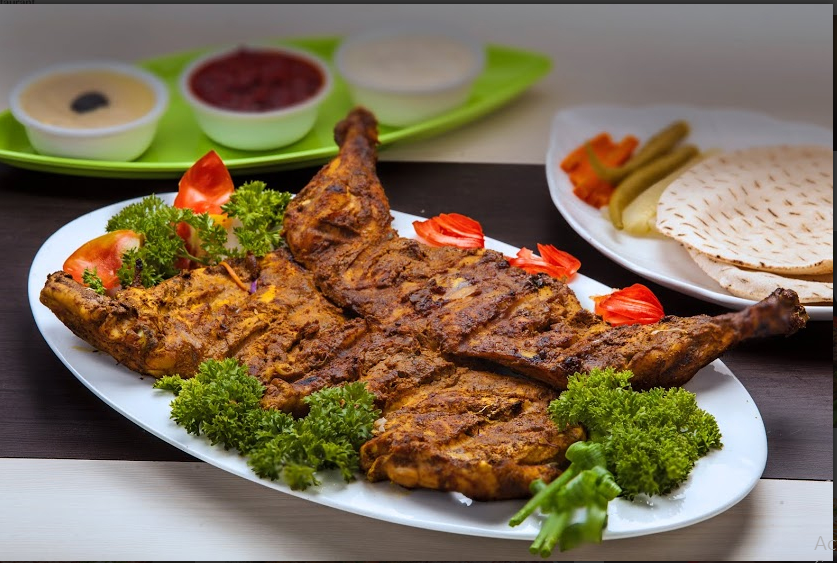
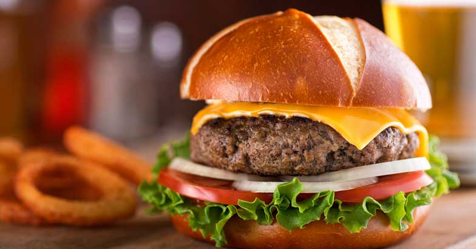

BIRIYANI
Biryani is a spiced mix of meat and rice, traditionally cooked over an open fire in a leather pot. It is combined in different ways with a variety of components to create a number of highly tasty and unique flavor combinations.

AL-FAHM
Alfahm is an Arabic grilled chicken. This chicken recipe is very popular in the middle east as it is marinated with Arabian spice and barbequed in a charcoal grill or in the oven.

BURGER
A hamburger (or burger for short) is a food, typically considered a sandwich, consisting of one or more cooked patties—usually ground meat, typically beef—placed inside a sliced bread roll or bun.